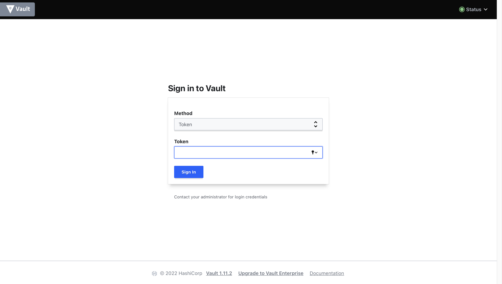

Lab1
Лабораторная работа №1 "Установка Docker и Minikube, мой первый манифест."
Описание
Это первая лабораторная работа в которой вы сможете протестировать Docker, установить Minikube и развернуть свой первый "под".
Цель работы
Ознакомиться с инструментами Minikube и Docker, развернуть свой первый "под".
Правила по оформлению
Правила по оформлению отчета по лабораторной работе вы можете изучить по ссылке
Ход работы
Данную лабораторную работу рекомендуется начать с изучения Документация по Minikube, эта статья поможет вам в первоначальном представлении о инструменте Minikube.
Перед выполнением лабораторной работы вам необходимо выполнить следующие задачи:
Работу можно проводить на устройстве с архитектурой x86/arm64/ARMv7, оригинальная инструкция
-
Установить Docker на рабочий компьютер
-
Установить Minikube используя оригинальную инструкцию
-
После установки вам необходимо развернуть minikube cluster
minikube start
- После запуска minikube cluster вы сможете взаимодействовать с k8s используя команду:
minikube kubectl
Использование
minikube kubectlнеобходимо если в вашей системе не был установленkubectl(в инструкции по установке minikube это не предусмотрено),kubectlявляется инструментом по управлению обычного k8s кластера и устанавливается отдельно. Для удобства использования вы можете создать алиасalias kubectl="minikube kubectl --"или аналогичный на свое усмотрение, но это не обязательно.
- Для первого манифеста мы выбрали образ HashiCorp Vault, более подробно можете почитать тут. Вам нужно будет написать манифест для развертывания "пода" HashiCorp Vault, и при этом прокинуть внутрь порт 8200
ВАЖНО! Вам не надо самим собирать контейнер, вы можете его взять тут
- После этого вам необходимо будет создать сервис для доступа к этому контейнеру, самый просто вариант - это выполнить команду:
Эта команда будет работать только если ваш "под" имеет имя
vault
minikube kubectl -- expose pod vault --type=NodePort --port=8200
- Команда выше создаст сервис, но как же вам попасть на ваш контейнер? Воспользуйтесь следующей командой:
minikube kubectl -- port-forward service/vault 8200:8200
-
minikube прокинет порт вашего компьютера в контейнер и вы сможете зайти в vault по ссылке http://localhost:8200
-
После перехода по ссылке у вас откроется интерфейс как на рисунке ниже

-
Для успешного завершения лабораторной работы вам необходимо войти в ваш vault ипользуя токен, который вам необходимо НАЙТИ, а не сгенерировать.
-
Теперь вопросы на засыпку: 1. Что сейчас произошло и что сделали команды указанные ранее? 2. Где взять токен для входа в Vault? (Подсказка: Логи всему голова)
-
Для остановки minikube cluster вы можете воспользоваться командой
minikube stop
Результаты лабораторной работы
В результате данной работы у вас должно быть:
-
Файл с разработанным вами манифестом для развертывания "пода" с расширением
.yaml. -
Схема организации контейеров и сервисов нарисованная вами в draw.io или Visio.
-
Ответы на вопросы (по возможности), скриншоты c результатами работы.
Laboratory Work No. 1 "Installing Docker and Minikube, My First Manifest"
Description
This is the first laboratory work in which you will test Docker, install Minikube, and deploy your first "pod."
Objectives
To get acquainted with Minikube and Docker tools, and deploy your first "pod."
Report Formatting Rules
You can learn the rules for formatting the report for the laboratory work by following this link
Procedure
It is recommended to start this laboratory work by studying the Minikube Documentation. This article will help you gain an initial understanding of the Minikube tool.
Before starting the laboratory work, you need to complete the following tasks:
You can perform this work on a device with x86/arm64/ARMv7 architecture. Original instructions,
-
Install Docker on your computer.
-
Install Minikube using the original instructions.
-
After installation, you need to deploy a Minikube cluster:
minikube start
- Once the Minikube cluster is started, you can interact with k8s using the following command:
minikube kubectl
You need to use minikube
kubectlifkubectlwas not already installed on your system (the installation instructions for Minikube do not include it).kubectlis a tool for managing regular Kubernetes clusters and is installed separately. For convenience, you can create an alias like alias kubectl="minikube kubectl --" or a similar one, but it's not mandatory.
- For the first manifest, we have chosen the HashiCorp Vault image. You can learn more about it here. You will need to write a manifest to deploy a HashiCorp Vault "pod" and expose port 8200 inside it.
IMPORTANT! You do not need to build the container yourself; you can find it here.
- After that, you will need to create a service to access this container. The simplest way to do it is by executing the following command:
This command will work only if your "pod" has the name "vault".
minikube kubectl -- expose pod vault --type=NodePort --port=8200
- The command above will create a service, but how do you access your container? Use the following command:
minikube kubectl -- port-forward service/vault 8200:8200
-
Minikube will forward the port from your computer to the container, and you will be able to access Vault at http://localhost:8200
-
After opening the link, you will see an interface like the one below:
-
To successfully complete the laboratory work, you need to enter your Vault using a token that you need to FIND, not generate.
-
Now, a couple of questions: 1. What just happened, and what did the commands mentioned earlier do? 2. Where can you find the token to log into Vault? (Hint: Logs hold the answers).
-
To stop the Minikube cluster, you can use the following command:
minikube stop
Laboratory Work Results
As a result of this work, you should have:
-
A file with the manifest you developed to deploy a "pod" with the
.yamlextension. -
A diagram of the organization of containers and services drawn by you in draw.io or Visio.
-
Answers to questions (if possible), screenshots with the results of the work.